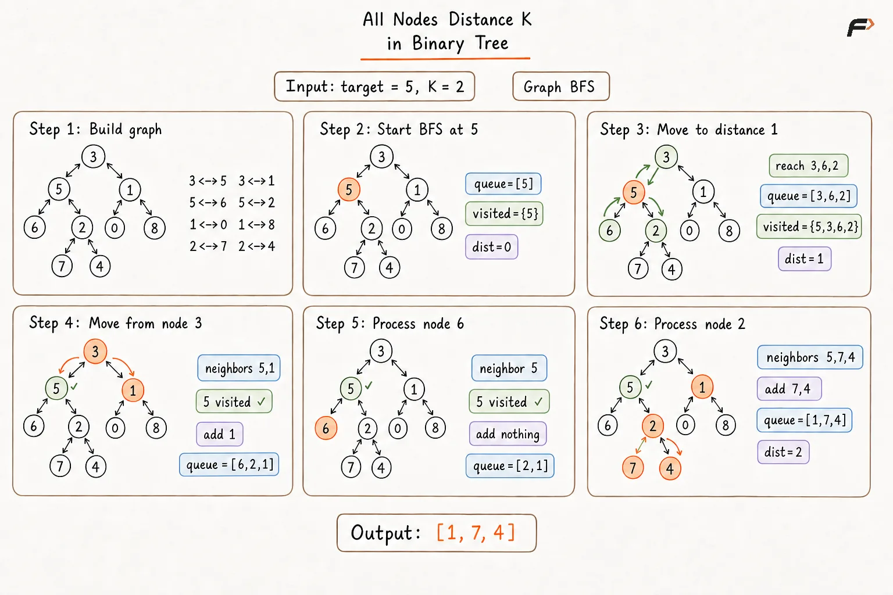
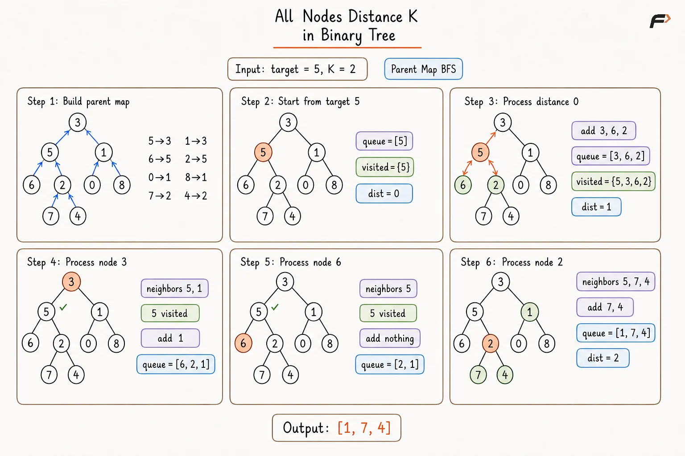
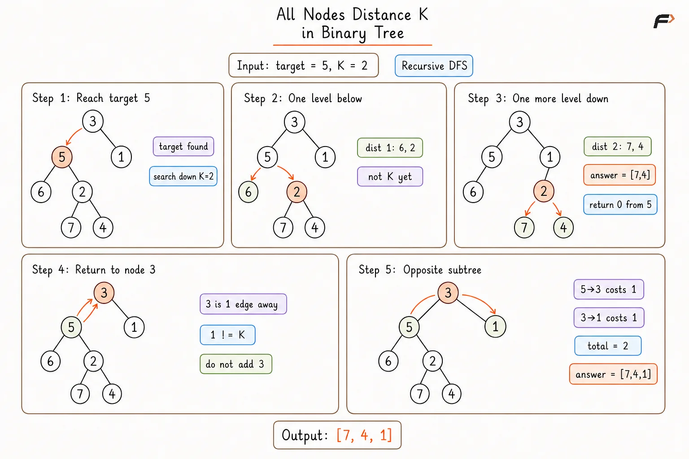

Print All Nodes at Distance K from a Target Node
Given the root of a binary tree, a target node present in the tree, and an integer K, return the values of all nodes whose distance from the target is exactly K edges.
The required nodes may lie:
inside the target's subtree,
above the target through its ancestors, or
inside a different subtree reached through an ancestor.
The nodes may be returned in any order.
Example 1
Input:root = [3, 5, 1, 6, 2, 0, 8, null, null, 7, 4], target = 5, K = 2
Output:[7, 4, 1]
Explanation:
Nodes 7 and 4 are two edges below target 5. Node 1 is reached through the path 5 -> 3 -> 1, which also contains 2 edges.
Example 2
Input:root = [1], target = 1, K = 0
Output:[1]
Explanation:
The target node itself is at distance 0, so it is the only node included in the answer.
Approach 1
A normal binary tree allows movement only from a parent to its children. However, nodes at distance K from the target may also require movement upward toward an ancestor.
For example, node 1 in Example 1 is reached from target 5 using:
5 -> 3 -> 1
To allow movement in both directions, every parent-child connection is treated as an undirected edge. An adjacency list is used to store all neighboring nodes so that movement from parent to child as well as child to parent becomes possible.
A queue is then used for BFS starting from the target. A variable currLevel is maintained because it represents the number of edges between the target and the nodes currently being processed.
A visited set is also maintained because converting the tree into an undirected graph introduces cycles such as:
parent -> child -> parent
The set prevents the same node from being processed repeatedly.
Algorithm
An adjacency list is constructed by traversing the binary tree, and every parent-child connection is stored in both directions so that movement upward and downward becomes possible.
A BFS queue is initialized with the
target, while avisitedset is initialized with the target so that nodes are not revisited through bidirectional edges.A variable
currLevelis initialized to0because the target itself lies at distance0.While the queue is not empty and
currLevelis smaller thanK, all nodes belonging to the current BFS level are processed.For every processed node, each unvisited neighbor is marked as visited and inserted into the queue because that neighbor lies one additional edge away from the target.
After one complete BFS level has been processed,
currLevelis increased by1.When
currLevelbecomesK, further expansion is stopped because every node currently remaining in the queue is exactlyKedges away from the target.The values of all nodes remaining in the queue are collected and returned.
Dry Run

All Nodes Distance K in Binary Tree Approach 1 Dry Run .png
Solution
#include <bits/stdc++.h>
using namespace std;
struct TreeNode {
int val;
TreeNode* left;
TreeNode* right;
TreeNode(int value) {
val = value;
left = nullptr;
right = nullptr;
}
};
class Solution {
private:
// Converts each parent-child connection
// into an undirected graph edge.
void buildGraph(
TreeNode* node,
unordered_map<TreeNode*, vector<TreeNode*>>& graph
) {
if (node == nullptr) {
return;
}
// Both directions are stored so traversal
// can move downward as well as upward.
if (node->left != nullptr) {
graph[node].push_back(node->left);
graph[node->left].push_back(node);
buildGraph(node->left, graph);
}
if (node->right != nullptr) {
graph[node].push_back(node->right);
graph[node->right].push_back(node);
buildGraph(node->right, graph);
}
}
public:
// Returns all nodes exactly K edges
// away from the target node.
vector<int> distanceK(
TreeNode* root,
TreeNode* target,
int K
) {
vector<int> answer;
if (root == nullptr) {
return answer;
}
unordered_map<TreeNode*, vector<TreeNode*>> graph;
buildGraph(root, graph);
queue<TreeNode*> nodesQueue;
unordered_set<TreeNode*> visited;
nodesQueue.push(target);
// The target is marked immediately so
// bidirectional edges cannot revisit it.
visited.insert(target);
// currLevel represents the number of edges
// from the target to the current BFS level.
int currLevel = 0;
while (!nodesQueue.empty()) {
// Nodes already in the queue are exactly
// K edges away, so no further expansion is needed.
if (currLevel == K) {
break;
}
int levelSize = nodesQueue.size();
// Exactly one BFS level is processed here.
for (int i = 0; i < levelSize; i++) {
TreeNode* node = nodesQueue.front();
nodesQueue.pop();
for (TreeNode* neighbor : graph[node]) {
if (visited.find(neighbor) == visited.end()) {
// Mark before insertion so the same node
// cannot enter the queue through another edge.
visited.insert(neighbor);
nodesQueue.push(neighbor);
}
}
}
// Completing one BFS level increases
// the distance from the target by one.
currLevel++;
}
// Every remaining node is exactly
// K edges away from the target.
while (!nodesQueue.empty()) {
answer.push_back(
nodesQueue.front()->val
);
nodesQueue.pop();
}
return answer;
}
};
int main() {
TreeNode* root = new TreeNode(3);
root->left = new TreeNode(5);
root->right = new TreeNode(1);
root->left->left = new TreeNode(6);
root->left->right = new TreeNode(2);
root->right->left = new TreeNode(0);
root->right->right = new TreeNode(8);
root->left->right->left = new TreeNode(7);
root->left->right->right = new TreeNode(4);
TreeNode* target = root->left;
int K = 2;
Solution solution;
vector<int> answer =
solution.distanceK(root, target, K);
for (int value : answer) {
cout << value << " ";
}
return 0;
}Complexity Analysis
Let N be the number of nodes in the binary tree.
Time Complexity: O(N), where N is the number of nodes in the binary tree. Every node and every tree edge is processed a constant number of times while the undirected graph is constructed and BFS is performed.
Space Complexity: O(N). The adjacency list stores information for up to N nodes, while the visited set and BFS queue can also contain up to N nodes in the worst case.
Approach 2
Constructing a complete undirected adjacency list stores more information than is actually required.
Every tree node already provides access to its left and right children. The only missing direction is movement from a child to its parent.
Therefore, a mapping named parentTrack is maintained:
child -> parent
The name parentTrack indicates that the structure is used to keep track of each node's parent so that traversal can move upward when required.
Once this mapping is available, every node effectively has at most three possible neighbors:
left child,
right child,
parent.
A nodesQueue is used for BFS from the target, while a visited set prevents movement back to nodes that have already been processed.
A variable currLevel represents the current distance from the target because every BFS level corresponds to one additional edge.
Algorithm
A queue-based level-order traversal is performed from the root, and a map named
parentTrackis constructed so that every non-root node can move upward to its parent.The root is treated separately in the parent mapping because it has no parent and therefore does not need an upward connection.
A
nodesQueueis initialized with the target because BFS must expand outward from the target one edge at a time.A
visitedset is initialized with the target so that movement through parent and child links cannot cause the same node to be processed again.A variable
currLevelis initialized to0because the target is at distance0from itself.At each BFS level, the left child, right child, and mapped parent of every node are considered whenever they exist and have not already been visited.
Every newly discovered neighbor is marked as visited before being inserted into
nodesQueue, preventing duplicate insertion through another direction.After one complete level has been processed,
currLevelis increased because all newly queued nodes are one edge farther from the target.When
currLevelbecomesK, further traversal is stopped, and the values of all nodes remaining innodesQueueare returned.
Dry Run

All Nodes Distance K in Binary Tree Approach 2 Dry Run .png
Solution
#include <bits/stdc++.h>
using namespace std;
struct TreeNode {
int val;
TreeNode* left;
TreeNode* right;
TreeNode(int value) {
val = value;
left = nullptr;
right = nullptr;
}
};
class Solution {
private:
// Builds child-to-parent relationships
// using level-order traversal.
void buildParentTrack(
TreeNode* root,
unordered_map<TreeNode*, TreeNode*>& parentTrack
) {
queue<TreeNode*> nodesQueue;
nodesQueue.push(root);
// The root has no parent, so no upward
// mapping is required for the root itself.
parentTrack[root] = nullptr;
while (!nodesQueue.empty()) {
TreeNode* node =
nodesQueue.front();
nodesQueue.pop();
if (node->left != nullptr) {
parentTrack[node->left] = node;
nodesQueue.push(node->left);
}
if (node->right != nullptr) {
parentTrack[node->right] = node;
nodesQueue.push(node->right);
}
}
}
public:
// Uses child, parent, and sibling directions
// to perform BFS outward from target.
vector<int> distanceK(
TreeNode* root,
TreeNode* target,
int K
) {
vector<int> answer;
if (root == nullptr) {
return answer;
}
// parentTrack provides the only direction
// missing from a normal binary tree.
unordered_map<TreeNode*, TreeNode*> parentTrack;
buildParentTrack(
root,
parentTrack
);
// nodesQueue stores nodes belonging
// to the current and upcoming BFS levels.
queue<TreeNode*> nodesQueue;
nodesQueue.push(target);
// visited prevents movement from a child
// to its parent and back to the same child.
unordered_set<TreeNode*> visited;
visited.insert(target);
// currLevel stores the current
// distance from the target.
int currLevel = 0;
while (!nodesQueue.empty()) {
// All queued nodes are already at
// distance K, so expansion is stopped.
if (currLevel == K) {
break;
}
int levelSize =
nodesQueue.size();
for (int i = 0; i < levelSize; i++) {
TreeNode* node =
nodesQueue.front();
nodesQueue.pop();
// The left child is one edge
// farther from the current node.
if (
node->left != nullptr &&
visited.find(node->left) == visited.end()
) {
visited.insert(node->left);
nodesQueue.push(node->left);
}
// The right child is processed
// in the same downward direction.
if (
node->right != nullptr &&
visited.find(node->right) == visited.end()
) {
visited.insert(node->right);
nodesQueue.push(node->right);
}
TreeNode* parent =
parentTrack[node];
// parentTrack enables the missing
// upward movement toward ancestors.
if (
parent != nullptr &&
visited.find(parent) == visited.end()
) {
visited.insert(parent);
nodesQueue.push(parent);
}
}
// One completed BFS level means
// all queued nodes are one edge farther.
currLevel++;
}
while (!nodesQueue.empty()) {
answer.push_back(
nodesQueue.front()->val
);
nodesQueue.pop();
}
return answer;
}
};
int main() {
TreeNode* root = new TreeNode(3);
root->left = new TreeNode(5);
root->right = new TreeNode(1);
root->left->left = new TreeNode(6);
root->left->right = new TreeNode(2);
root->right->left = new TreeNode(0);
root->right->right = new TreeNode(8);
root->left->right->left = new TreeNode(7);
root->left->right->right = new TreeNode(4);
TreeNode* target = root->left;
int K = 2;
Solution solution;
vector<int> answer =
solution.distanceK(root, target, K);
for (int value : answer) {
cout << value << " ";
}
return 0;
}Complexity Analysis
Let N be the number of nodes in the binary tree.
Time Complexity: O(N), where N is the number of nodes in the binary tree. Building parentTrack requires visiting every node once, and the BFS from the target visits each reachable node at most once.
Space Complexity: O(N). The parentTrack map, visited set, and nodesQueue can each contain information for up to N nodes in the worst case.
Approach 3
The parent map can be avoided completely by using recursion to determine how far the target lies below each ancestor.
Two types of nodes can exist at distance K from the target:
Nodes below the target.
Nodes reached by moving upward to an ancestor and then either selecting that ancestor or moving into its opposite subtree.
A helper is used to collect nodes lying a specific number of edges below a given node.
Another recursive function returns the distance between the current node and the target. A returned value of -1 indicates that the target does not exist in that subtree. Otherwise, the returned value tells an ancestor how many edges below it the target was found.
Suppose an ancestor is distance edges away from the target:
if
distance == K, that ancestor itself is included;otherwise, the ancestor's opposite subtree is searched for nodes that can complete the remaining distance.
This allows both downward and upward paths to be handled without storing parent pointers.
Algorithm
A helper is used to collect nodes that lie exactly a required number of edges below a given node.
A DFS is started from the root, and each recursive call is made to return the distance from the current node to the target, while
-1is returned when the target is absent from that subtree.When the target node is reached, all descendants exactly
Kedges below it are collected, and distance0is returned to its parent.If a valid distance is returned from the left child, that value is increased by
1to obtain the current node's distance from the target.If this updated distance equals
K, the current ancestor is inserted into the answer. Otherwise, the right subtree is searched for nodes whose additional distance completes exactlyKedges.The same symmetric process is performed when the target is found in the right subtree, with the left subtree being treated as the opposite subtree.
The calculated target distance is propagated upward until every relevant ancestor and opposite subtree has been processed.
Dry Run

All Nodes Distance K in Binary Tree Approach 3 Dry Run .png
Solution
#include <bits/stdc++.h>
using namespace std;
struct TreeNode {
int val;
TreeNode* left;
TreeNode* right;
TreeNode(int value) {
val = value;
left = nullptr;
right = nullptr;
}
};
class Solution {
private:
// Collects nodes exactly distance edges
// below the given subtree root.
void collectDown(
TreeNode* node,
int distance,
vector<int>& answer
) {
if (
node == nullptr ||
distance < 0
) {
return;
}
if (distance == 0) {
answer.push_back(node->val);
return;
}
collectDown(
node->left,
distance - 1,
answer
);
collectDown(
node->right,
distance - 1,
answer
);
}
// Returns the distance from node to target,
// or -1 when target is absent from the subtree.
int findTarget(
TreeNode* node,
TreeNode* target,
int K,
vector<int>& answer
) {
if (node == nullptr) {
return -1;
}
// Descendants exactly K levels below
// target are collected immediately.
if (node == target) {
collectDown(
node,
K,
answer
);
return 0;
}
int leftResult =
findTarget(
node->left,
target,
K,
answer
);
if (leftResult != -1) {
int currentDistance =
leftResult + 1;
// The ancestor itself is valid when
// its distance from target equals K.
if (currentDistance == K) {
answer.push_back(node->val);
} else {
// The opposite subtree is searched for
// nodes completing the remaining distance.
collectDown(
node->right,
K - currentDistance - 1,
answer
);
}
return currentDistance;
}
int rightResult =
findTarget(
node->right,
target,
K,
answer
);
if (rightResult != -1) {
int currentDistance =
rightResult + 1;
if (currentDistance == K) {
answer.push_back(node->val);
} else {
// When target is on the right,
// the left subtree becomes opposite.
collectDown(
node->left,
K - currentDistance - 1,
answer
);
}
return currentDistance;
}
return -1;
}
public:
// Finds nodes at distance K without
// storing explicit parent relationships.
vector<int> distanceK(
TreeNode* root,
TreeNode* target,
int K
) {
vector<int> answer;
findTarget(
root,
target,
K,
answer
);
return answer;
}
};
int main() {
TreeNode* root = new TreeNode(3);
root->left = new TreeNode(5);
root->right = new TreeNode(1);
root->left->left = new TreeNode(6);
root->left->right = new TreeNode(2);
root->right->left = new TreeNode(0);
root->right->right = new TreeNode(8);
root->left->right->left = new TreeNode(7);
root->left->right->right = new TreeNode(4);
TreeNode* target = root->left;
int K = 2;
Solution solution;
vector<int> answer =
solution.distanceK(root, target, K);
for (int value : answer) {
cout << value << " ";
}
return 0;
}Complexity Analysis
Let N be the number of nodes in the binary tree and H be the height of the tree.
Time Complexity: O(N), where N is the number of nodes in the binary tree. The relevant subtrees are processed a constant number of times overall while the target is located and nodes at the required distances are collected.
Space Complexity: O(H), where H is the height of the binary tree, due to the recursion stack. This becomes O(N) for a skewed tree and O(log N) for a balanced tree.
Interview follow-up Questions
Some valid nodes may lie above the target or inside another subtree reached through an ancestor. A downward-only traversal would miss such nodes.